窥探 MySQL 索引

文章目录
MySQL 索引
1. 什么是数据库索引
在关系数据库中，如果有上万甚至上亿条记录，在查找记录的时候，想要获得非常快的速度，就需要使用索引。
索引是关系数据库中对某一列或多个列的值进行预排序的数据结构，在 MySQL 中也被称为 Key。通过使用索引，可以让数据库系统不必扫描整个表，而是直接定位到符合条件的记录，这样就大大加快了查询速度。
注意事项：有序性是因为一切二分法查找法都要求数据已经是排好顺序的。如果把索引看做 key（虽然 key 数据也是来自于表单中一行记录的某些字段值），那么 value 在 MyISAM 中就是记录的在存储文件中的地址，而在 InnoDB 中 value 直接就是对应的一行数据。
比如我们将一本书中每一章的章节名作为搜索条件，那么书本最开始的目录就是索引。我们通过目录能够非常快地找到对应章节，而不必一页页翻书来查看是否是在对应目录上。
索引的本质实际上还是存储在磁盘上的数据结构，它可以有的存储结构：
- 二叉搜索树；
- 红黑树；
- Hash 表；
- B-Tree；
其中 MySQL 的 InnoDB 支持 B+Tree 以及 Hash 表，下面会具体分析各个数据结构的区别。
如果我们事先对某个列字段建立好了索引，那么 MySQL 在依靠列字段进行搜索的时候就会优先去索引中搜寻，而不必依靠在数据表中的逐行搜寻。
注意事项：在一次查询中，MySQL 只能使用一个索引。

比如上表左侧为数据库中的多行数据，右侧为索引（数据结构为二叉搜索树类型）：
- 如果单单用数据库的表来查找 Col2 =89 的数据，因为表格相对于 Col1 自增，但是对于 Col2 没有任何排序要求，因此我们必定需要遍历 6 行数据才能找到对应的行；
- 如果使用索引，因为以 Col2 为参考的索引已经排好序，因此根据深度优先算法仅仅需要读取 2 次就能够找到 Col2 = 89 对应行；
2. 如何创建数据库索引
例如，对于students表：
| id | class_id | name | gender | score |
|---|---|---|---|---|
| 1 | 1 | 小明 | M | 90 |
| 2 | 1 | 小红 | F | 95 |
| 3 | 1 | 小军 | M | 88 |
如果要经常根据 score 列进行查询，就可以对score列创建索引：
|
|
使用 ADD INDEX idx_score (score) 就创建了一个名称为 idx_score，使用列 score 的索引。索引名称是任意的，索引如果有多列，可以在括号里依次写上，例如：
|
|
索引的效率取决于索引列的值是否散列，即该列的值如果越互不相同，那么索引效率越高。反过来，如果记录的列存在大量相同的值，例如 gender 列，大约一半的记录值是 M，另一半是 F，因此，对该列创建索引就没有意义。
可以对一张表创建多个索引。
优缺点：
- 索引的优点是提高了查询效率（极大）；
- 缺点是在插入、更新和删除记录时，需要同时修改索引，因此，索引越多，插入、更新和删除记录的速度就越慢。
对于主键，关系数据库会自动对其创建主键索引。使用主键索引的效率是最高的，因为主键会保证绝对唯一。
2.1 索引的查看和创建语法
|
|
desc tableName; 命令输出的表中的 Key 栏：
- PRI 为主键索引；
- UNI 为唯一索引；
- MUL 为普通索引；
例如下面两图：
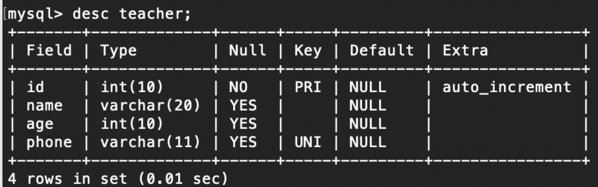 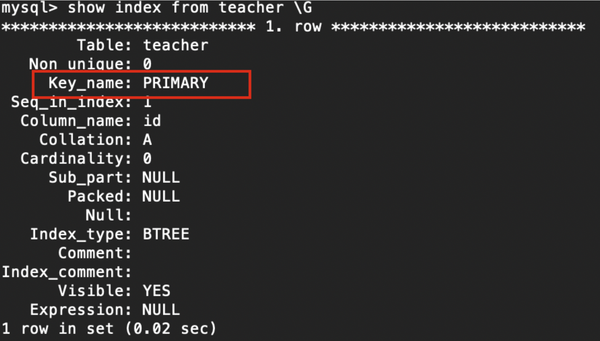索引的创建可以归纳为如下：
常用以下两种方式：
CREATE [UNIQUE|FULLTEXT] INDEX [indexName] ON tableName(columnname(length))ALTER TABLE tableName ADD [UNIQUE|FULLTEXT] INDEX [indexName] (colummnname(length))- 也可以在创建表的同时建索引，这里就不列出了，下面几个小节会具体说明；
- unique|fulltext 为可选参数，分别表示唯一索引、全文索引、不选则是普通索引；
- columnname 为需要创建索引的字段列，该列必须从数据表中该定义的多个列中选择
- indexName 指定索引的名称，为可选参数，如果不指定，默认 colummnname 为索引值；
- length 为可选参数，表示索引的长度，只有字符串类型的字段才能指定索引长度；
2.2 创建主键索引
主键索引的定义：InnoDB 中的表单数据本身就要创建为一棵 B+ 树，而这棵排序节点用到的索引就被称为主键索引。
只要有主键，那么主键索引根据的就是主键，我们在创建表和后续修改时都能够通过指定主键来确定主键索引，如下：
-
创建表同时设置主键
1 2 3 4 5 6create table teacher( -> id int(10) auto_increment, -> name varchar(20), -> age int(10), -> phone varchar(11), -> primary key (id));//主键设置 -
单独设置主键
1alter table teacher add primary key (id);
在 InnoDB 中根据主键索引来查询是最快的，因为其他索引都是辅助索引，它们的 data 实际上为主键号，换句话说，除了主键索引，其余索引都要多走一遍 B+ 树。
辅助索引是我们外加的索引，对于 InnoDB 的每一张表都能够创建至多 16 个索引，但是主键索引是唯一的，其他索引都是主键索引，比如唯一索引、普通索引。
2.3 创建唯一索引
唯一索引的创建方式：
|
|
2.4 创建普通索引
创建普通索引的方式如下：
|
|
2.5 创建联合索引
创建联合索引的方式如下：
|
|
2.6 创建全文索引
|
|
3. 索引的优点和缺点
索引有很多种类型，可以为不同的场景提供更好的性能。在 MySQL 中，索引是在存储引擎层而不是服务器层实现的。所以，并没有统一的索引标准：不同存储引擎的索引的工作方式并不一样，也不是所有的存储引擎都支持所有类型的索引。即使多个存储引擎支持同一种类型的索引，其底层的实现也可能不同。
- 索引大大减少了服务器需要扫描的数据量。
- 索引可以帮助服务器避免排序和临时表。
- 索引可以将随机 I/O 变为顺序 I/O。
固态硬盘驱动器和传统的硬盘驱动器有着完全不同的性能特性。然而即使是固态硬盘，索引的原则依然成立，只是那些需要尽量避免的糟糕索引对于固态硬盘的影响没有传统硬盘那么糟糕。
索引速度快的原因是什么？
不同类型的索引有着不同的数据结构，但是提高查询速度的思想是一致的：利用数据结构的有序性避免进行全表扫描来获取需要的数据。
用好索引能够大大提高查询效率，那么代价是什么呢？
- 创建索引和维护索引要耗费时间，这种时间随着数据量的增加而增加；
- 索引需要占物理空间，除了数据表占数据空间之外，每一个索引还要占一定的物理空间，如果要建立聚簇索引，那么需要的空间就会更大；
- 当对表中的数据进行增加、删除和修改的时候，索引也要动态的维护，降低了数据的维护速度；
4. 索引的数据结构选型
数据结构图来源于（旧金山大学）：https://www.cs.usfca.edu/~galles/visualization/Algorithms.html
出于减少磁盘 I/O 次数的目的，我们对于一个上千万的行的数据要求一个树的深度不能够很深，或者说应当是常数位深度。
对于各种数据结构，我们在这先有一个统一的设定：每一个索引节点都有对数据库表中对应行的一个地址指针，找到索引的节点就可以通过这个地址指针去数据库中马上定位到具体某行数据。
4.1 二叉搜索（查找）树-Binary Search Tree
Binary Search Tree-二叉查找树，也称为二叉搜索树、有序二叉树或排序二叉树，是指一棵空树或者具有下列性质的二叉树： 若任意节点的左子树不空，则左子树上所有节点的值均小于它的根节点的值； 若任意节点的右子树不空，则右子树上所有节点的值均大于或等于它的根节点的值； 任意节点的左、右子树也分别为二叉查找树。
那么二叉搜索树适合来做索引的内部数据结构吗？
我们通常会拿自增的整型键值作为索引，那么如果使用二叉搜索树，数据结构如下：
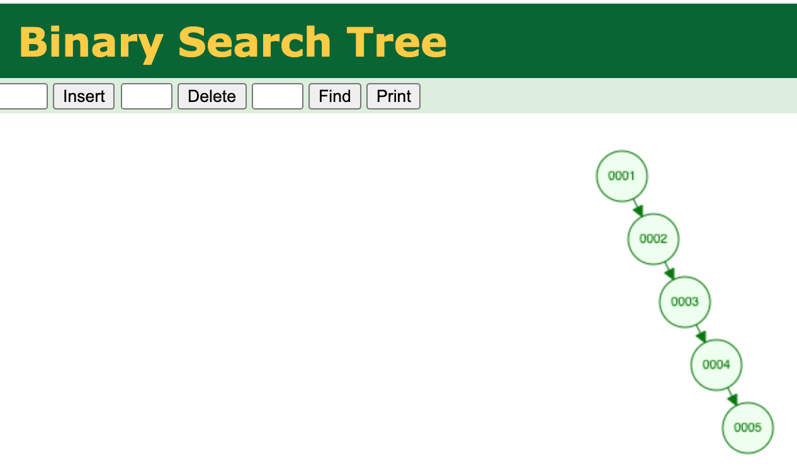
可见，此时二叉搜索树由于其极度的单边增长趋势，相当于单向链表。而在单向链表上进行遍历搜索和原本在表中按行搜索没有任何区别，因为从遍历次数上来看还是需要遍历相同的次数，而且在删除、插入时还要维护索引。
因此使用二叉搜索树来作为索引没有优势只有额外的消耗，因此二叉搜索树不适合作为索引内部的数据结构。
4.2 红黑树-Red/Black Tree
红黑树是一种自平衡二叉查找树。我们可以将红黑树看做为二叉搜索树的改进版本，其在树的结构失衡非常严重的时候会通过旋转来解决问题。
由于 Gif 暂时不支持

最终的数据结构如下图所示：
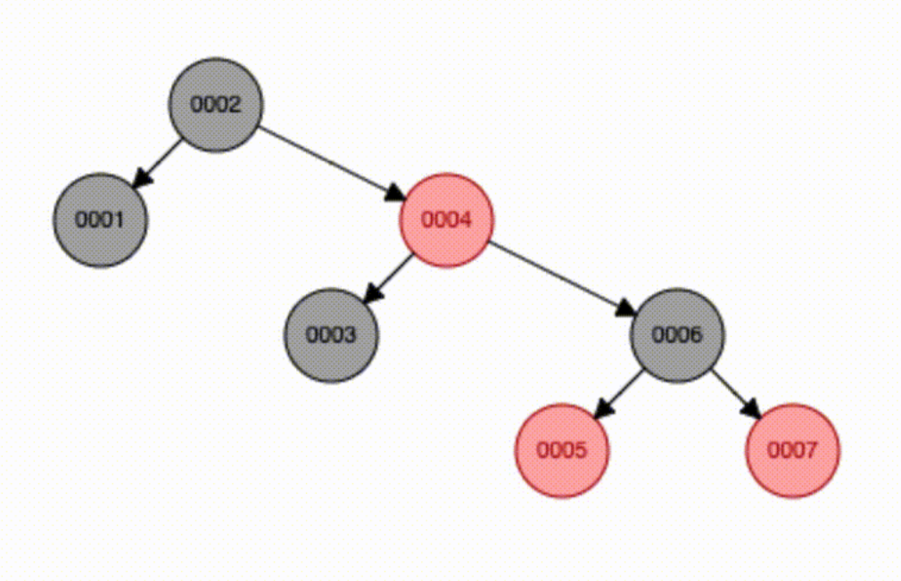
我们可以发现，在自增整数作为索引的背景下红黑树的表现比二叉搜索树好非常多，原本第 6 行数据要在表上查找 6 次，现在仅仅需要查找 3 次，效率高了不少。
这就是二叉树变平衡了的优势。
但是如果数据库中有 2 千万条数据，那么红黑树需要多少层呢？
树的层级有 25 层，这可是一颗相当高的一棵树，这会极大影响搜索效率。
4.3 哈希索引
哈希索引(hash index)基于哈希表实现，只有精确匹配索引所有列的查询才有效生。对于每一行数据，存储引擎都会对所有的索引列计算一个哈希码(hash code)，哈希码是一个较小的值，并且不同键值的行计算出来的哈希码也不一样。哈希索引将所有的哈希码存储在索引中，同时在哈希表中保存指向每个数据行的指针。
在 MySQL 中，只有 Memory 引擎显式支持哈希索引。这也是 Memory 引擎表的默认索引类型，Memory 引擎同时也支持 B-Tree 索引。值得一提的是，Memory 引擎是支持非唯一哈希索引的，这在数据库世界里面是比较与众不同的。如果多个列的哈希值相同，索引会以链表的方式存放多个记录指针到同一个哈希条目中。
下面来看一个例子。假设有如下表：
|
|
然后再填入相关数据后，表格有如下数据：
|
|
假设索引使用假想的哈希函数 f()，它返回下面的值(都是示例数据，非真实数据) :
- f(‘a’) = 2323
- f(‘b’) = 7437
- f(‘p’) = 8784
- f(‘v’) = 2458
则哈希索引的数据结构如下：
| 槽（Slot） | 值（Value） |
|---|---|
| 2323 | 指向第 1 行的指针 |
| 2458 | 指向第 4 行的指针 |
| 7437 | 指向第 2 行的指针 |
| 8784 | 指向第 3 行的指针 |
注意每个槽的编号是顺序的，但是数据行不是。
下面使用 hash 索引字段进行查询，有：
|
|
其分为如下的步骤：
- MSQL 先计算 ‘p’ 的哈希值；
- 根据哈希值进行寻找对应的地址指针，意味 hash 槽是有序的，因此查询效率很高；
- 读取对应指针上的数据是否为 ‘p’，是则返回；
因为索引自身只需存储对应的哈希值，所以索引的结构十分紧凑，这也让哈希索引查找的速度非常快。然而，哈希索引也有它的限制：
- 哈希索引只包含哈希值和行指针，而不存储字段值，所以不能使用索引中的值来避免读取行。不过，访问内存中的行的速度很快，所以大部分情况下这一点对性能的影响并不明显。
- 哈希索引数据并不是按照索引值顺序存储的，所以也就无法用于排序。
- 哈希索引不支持部分索引列匹配查找，因为哈希索引始终是使用索引列的全部内容来计算哈希值的。例如，在数据列 (A,B) 上建立哈希索引，如果查询只有数据列 A，则无法使用该索引。
- 哈希索引只支持等值比较查询，包括
=、IN()、<=>；不支持任何范围查询，例如WHERE price>100。 - 访问哈希索引的数据非常快，除非有很多哈希冲突(不同的索引列值却有相同的哈希值)。当出现哈希冲突的时候，存储引擎必须遍历链表中所有的行指针，逐行进行比较，直到找到所有符合条件的行。
- 如果哈希冲突很多的话，一些索引维护操作的代价也会很高。例如，如果在某个选择性很低(哈希冲突很多)的列上建立哈希索引，那么当从表中删除一行时，存储引擎需要遍历对应哈希值的链表中的每一行，找到并删除对应行的引用，冲突越多，代价越大。
注意事项：基于 Hash 索引的表还是能够支持范围查找，只不过其通过遍历实现，不能利用索引进行查询优化。
4.4 B 树-B-tree
B 树能够将树的高度限制在很大范围内的高度是一个常数级别，即使数据量有千万级别，使树的高度在很大的范围内不随着数据量的增多而增多。
那么什么是 B Tree?
B 树和平衡二叉树稍有不同的是 B 树属于多叉树又名平衡多路查找树（查找路径不只两个），数据库索引技术里大量使用者 B 树和 B+ 树的数据结构，让我们来看看他有什么特点：
-
排序方式：所有节点关键字是按递增次序排列，并遵循左小右大原则；
就是说如果有重复元素，父节点 20，子节点 20，那么子节点应当位于右侧，即：
子节点＜父节点≤右子节点
-
子节点数：非叶节点的子节点数 >1，且 <=M ，且M>=2，空树除外（注：M 阶代表一个树节点最多有多少个查找路径，M=M 路，当 M=2 则是 2 叉树，M=3 则是 3 叉）；
平衡多路查找树的背景下，父节点的子节点是子平衡多路查找树的根节点。
-
关键字数：枝节点的关键字数量大于等于 ceil(m/2)-1 个且小于等于 M-1 个（注：ceil() 是个朝正无穷方向取整的函数如 ceil(1.1) 结果为 2);
-
所有叶子节点均在同一层、叶子节点除了包含了关键字和关键字记录的指针外也有指向其子节点的指针。只不过其指针地址都为 null 对应下图最后一层节点的空格子；
最后我们用一个图和一个实际的例子来理解 B 树（这里为了理解方便我就直接用实际字母的大小来排列 C>B>A）

其有两个方向的大小关系：
- 同一个节点上的索引，从左到右依次递增。
- 左子节点上所有的索引<父节点索引≤右子节点上所有的索引
如上图我要从上图中找到 E 字母，查找流程如下：
-
获取根节点的关键字进行比较，当前根节点关键字为 M，E<M（26 个字母顺序），所以往找到指向左边的子节点（二分法规则，左小右大，左边放小于当前节点值的子节点、右边放大于当前节点值的子节点）；
-
拿到关键字 D 和 G，D<E<G 所以直接找到 D 和 G 中间的节点；
-
拿到 E 和 F，因为 E=E 所以直接返回关键字和指针信息（如果树结构里面没有包含所要查找的节点则返回 null）；
那么 B-tree 如何确保平衡的呢？
我们定义一个 5 阶树（平衡 5 路查找树;），现在我们要把3、8、31、11、23、29、50、28 这些数字构建出一个 5 阶树出来;
遵循规则：
- 节点拆分规则：当前是要组成一个 5 路查找树，那么此时 m=5，关键字数必须 <=5-1（这里关键字数 >4 就要进行节点拆分）；
- 排序规则：满足节点本身比左边节点大，比右边节点小的排序规则;
先插入 3、8、31、11：
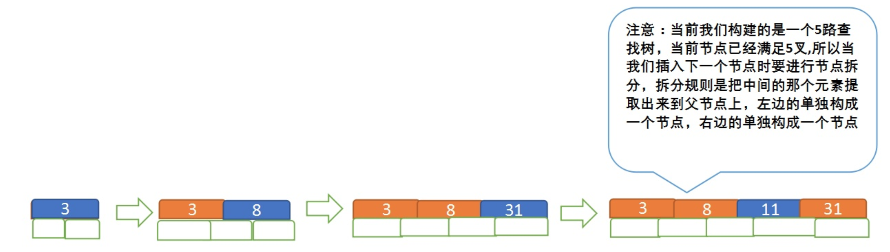
再插入 23、29：
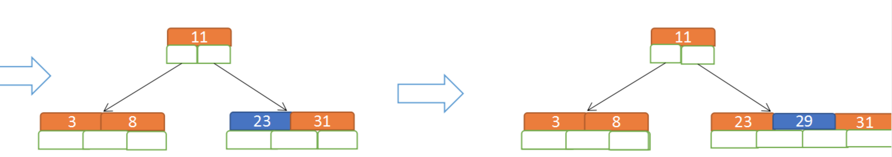
再插入50、28：
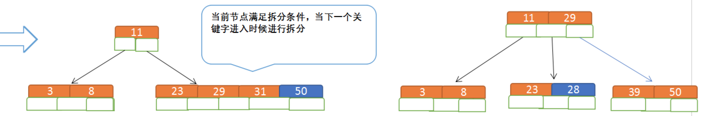
B 树的特点：
B 树相对于平衡二叉树的不同是，每个节点包含的关键字增多了，特别是在 B 树应用到数据库中的时候，数据库充分利用了磁盘块的原理（磁盘数据存储是采用块的形式存储的，每个块的大小为 4K，每次 I/O 进行数据读取时，同一个磁盘块的数据可以一次性读取出来）把节点大小限制和充分使用在磁盘快大小范围；把树的节点关键字增多后树的层级比原来的二叉树少了，减少数据查找的次数和复杂度；
4.5 B+Tree
4.5.1 B+Tree 概述
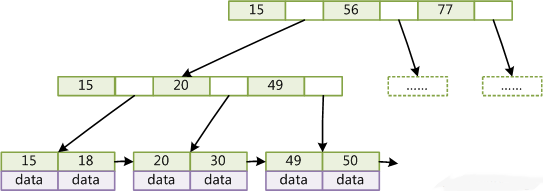
B+ 树是 B 树的一个升级版，相对于 B 树来说 B+ 树更充分的利用了节点的空间，让查询速度更加稳定，其速度完全接近于二分法查找。为什么说 B+ 树查找的效率要比 B 树更高、更稳定；我们先看看两者的区别：
-
B+ 树的非叶子节点不保存关键字记录的指针，只进行数据索引(冗余，因为叶子节点上有着完整的索引结构)，这样使得 B+ 树每个非叶子节点所能保存的索引值大大增加；
如果树中每一个节点的数据大小一定，那么 B+树的一个非叶子节点能够比 B 树的一个非叶子节点存储更多数量的索引。
-
B+ 树叶子节点保存了父节点的所有关键字记录的指针，所有数据地址必须要到叶子节点才能获取到。所以每次数据查询的次数都一样；
-
B+ 树叶子节点的关键字从小到大有序排列，左边结尾数据都会保存右边节点开始数据的指针。
这个特性在范围查找（区间访问）时非常有用。
-
非叶子节点的子节点数=关键字数（来源百度百科）（根据各种资料 这里有两种算法的实现方式，另一种为非叶节点的关键字数=子节点数-1（来源维基百科)，虽然他们数据排列结构不一样，但其原理还是一样的Mysql 的B+树是用第一种方式实现）;
关于节点大小的讨论
在 MySQL 中，B+ 树的每一个非叶子节点默认占据 16 KB 大小的数据，如果我们索引值使用 BigInt 类型，其占据 8 B 的内存大小。另一方面，由于每一个非叶子节点其存储方式是以一对：“索引值+下一个节点地址”来存储的，而写一个节点地址通常是由 6 B 数据大小来存储的，因此对于 MySQL 中以 BigInt 作为数据类型的索引，一个非叶子节点可以存储 16KB/(6B+8B) = 1170 个索引。而最后的叶子节点中每一个索引大概占据 1 KB，即可以存放 16 个节点。
这里有假设这里的存储引擎是 InnoDB。
因此对于一个高度为 3 的 B+ 树，如上图所示：
- 第一层的根节点可以存储 1170 个向下的非叶子节点指针；
- 第二层有 1170 个节点，每一个节点又可以存储 1170 向下的叶子节点指针；
- 最后一层的每一个叶子节点可以存放 16 个索引；
因此，虽然索引有冗余，但是存储的总索引数量为 1170 * 1170*16 = 21902400，已经 2 千万 + 的数据了。
B+ 树的特点：
- B+树的层级更少：相较于B树B+每个非叶子节点存储的关键字数更多，树的层级更少所以查询数据更快；
- B+树查询速度更稳定：B+所有关键字数据地址都存在叶子节点上，即每一个索引实际上距离根节点距离相同，所以每次查找的次数都相同所以查询速度要比 B 树更稳定;
- B+树天然具备排序功能：B+树所有的叶子节点数据构成了一个有序链表，在查询大小区间的数据时候更方便，数据紧密性很高，缓存的命中率也会比 B 树高。
- B+树全节点遍历更快：B+ 树遍历整棵树只需要遍历所有的叶子节点即可，，而不需要像 B 树一样需要对每一层进行遍历，这有利于数据库做全表扫描。
- B+ 树的范围查找非常方便，这是因为 B+ 树的叶子节点之间依靠单向指针相连。比如查找范围为 10<index<16 的节点，我们仅仅需要先找到索引为 10 的节点在哪个叶子子节点上，特别需要指出的是，即使比如 14 节点在另一个叶子节点上，也能通过叶子节点之间的指针快速找到索引。
B树相对于B+树的优点是：如果经常访问的数据离根节点很近，而B树的非叶子节点本身存有关键字其数据的地址，所以这种数据检索的时候会要比B+树快。
4.5.2 数据库的磁盘目录文件。
对于一个 MySQL 应用程序，其在磁盘上安装时会有其安装目录，在安装目录下有一个 data 目录专门用于存放数据库文件夹，如下：
那么每一个数据库中又有很多表，每一个表不再对应文件夹，而是数据库目录下的一组文件，如下：
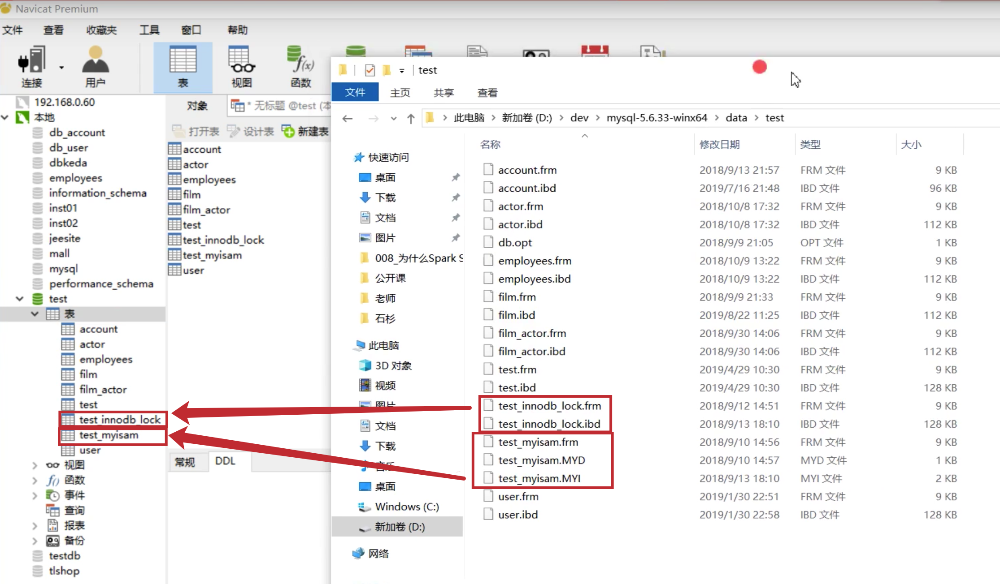
也可以用如下表示：
|
|
test 数据库下的两张表分别对应 MySQL_HOME/data/test/ 路径下的一组文件：
- test_innodb_lock 表对应：test_innodb_lock.frm 以及 test_innodb_lock.ibd 文件；
- test_myisam 表对应：test_myisam.frm、test_myisam.MYD 文件以及 test_myisam.MYI 文件；
其中
- *.frm 文件(framework)描述了一个表的各行的定义：名称、类型、是否非空、自增性等等，这个文件在 MySQL 中与具体的存储引擎无关。
- *.MYD 文件(MyISAM Data)存储了 MyISAM 存储引擎的表单数据；
- *.MYI 文件(MyISAM Index)存储了 MyISAM 存储引擎的索引数据；
- *.ibd 文件(InnodB Data)存储了 InnoDB 存储引擎的表单数据以及索引数据；
- *.log 文件存储了日志数据；
我们在这里可以发现，MyISAM 和 InnoDB 对应的文件数量和类型是有区别的：
- InnoDB 将表单数据和索引用一颗 B+ 树来表示，因此被称为聚集（聚簇索引）；
- MyISAM 将表单数据和索引分为两个文件来存储，因此就没有上述说法。
在 MySQL 中，索引属于存储引擎级别的概念，不同存储引擎对索引的实现方式是不同的，本文主要讨论 MyISAM 和 InnoDB 两个存储引擎的索引实现方式。
不管哪一个存储引擎，都是描述一个表。虽然一个数据库通常有其默认的存储引擎设置。
4.5.3 MyISAM 中的 B+Tree
MyISAM 引擎使用 B+Tree 作为索引结构，叶节点的 data 域存放的是数据记录的地址。下图是 MyISAM 索引的原理图：
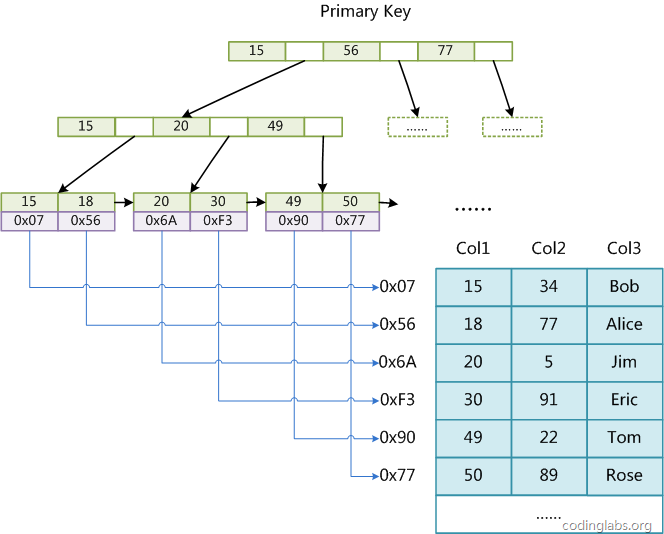从上图也可以看出，表单存储文件和索引存储是分开独立存储的。
这里设表一共有三列，假设我们以 Col1 为主键，则图 8 是一个 MyISAM 表的主索引（Primary key）示意。可以看出 MyISAM 的索引文件仅仅保存数据记录的地址。在 MyISAM 中，主索引和辅助索引（Secondary key）在结构上没有任何区别，只是主索引要求 key 是唯一的，而辅助索引的 key 可以重复。如果我们在 Col2 上建立一个辅助索引，则此索引的结构如下图所示：
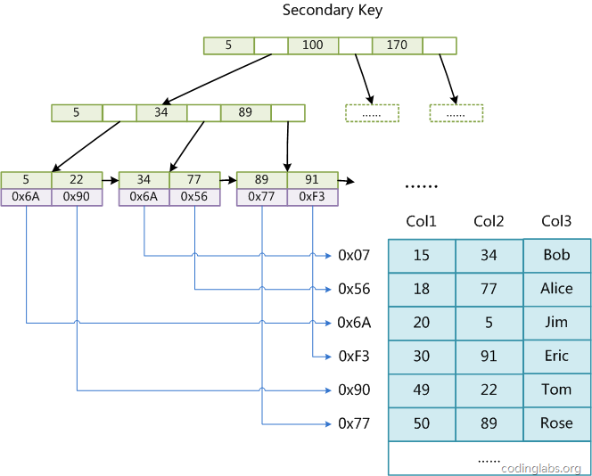
同样也是一棵 B+Tree，data 域保存数据记录的地址。因此，MyISAM 中索引检索的算法为首先按照 B+Tree 搜索算法搜索索引，如果指定的 Key 存在，则取出其 data 域的值，然后以 data 域的值为地址，读取相应数据记录。
MyISAM 的索引方式也叫做“非聚集”的，之所以这么称呼是为了与 InnoDB 的聚集索引区分。
4.5.4 InnoDB 中的 B+Tree
虽然 InnoDB 也使用 B+Tree 作为索引结构，但具体实现方式却与 MyISAM 截然不同。
第一个重大区别是 InnoDB 的数据文件本身就是索引文件。从上文知道，MyISAM 索引文件和数据文件是分离的，索引文件仅保存数据记录的地址。而在 InnoDB 中，表数据文件本身就是按 B+Tree 组织的一个索引结构，这棵树的叶节点 data 域保存了完整的数据记录。这个索引的 key 是数据表的主键，因此 InnoDB 表数据文件本身就是主索引。

上图是 InnoDB 主索引（同时也是数据文件）的示意图，可以看到叶节点包含了完整的数据记录。这种索引叫做聚集索引。因为 InnoDB 的数据文件本身要按主键聚集，所以 InnoDB 要求表必须有主键（MyISAM 可以没有），如果没有显式指定，则 MySQL 系统会自动选择一个可以唯一标识数据记录的列作为主键，如果不存在这种列，则 MySQL 自动为 InnoDB 表生成一个隐含字段作为主键，这个字段长度为 6 个字节，类型为长整形。
4.6 非数据结构出发的索引分类
4.6.1 辅助索引
第二个与 MyISAM 索引的不同是 InnoDB 的辅助索引 data 域存储相应记录主键的值而不是地址。换句话说，InnoDB 的所有辅助索引都引用主键作为 data 域。例如，下图为定义在 Col3 上的一个辅助索引：
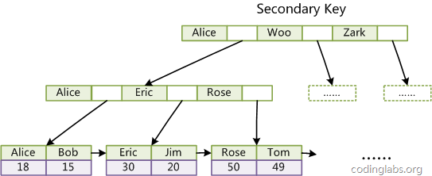
这里以英文字符的 ASCII 码作为比较准则。聚集索引这种实现方式使得按主键的搜索十分高效，但是辅助索引搜索需要检索两遍索引：首先检索辅助索引获得主键，然后用主键到主索引中检索获得记录。
4.6.2 联合（复合）索引
在上文中，我们都是假设索引只引用了单个的列，实际上，MySQL 中的索引可以以一定顺序引用多个列，这种索引叫做联合索引，一般的，一个联合索引是一个有序元组<a1, a2, …, an>，其中各个元素均为数据表的一列，实际上要严格定义索引需要用到关系代数，但是这里我不想讨论太多关系代数的话题，因为那样会显得很枯燥，所以这里就不再做严格定义。另外，单列索引可以看成联合索引元素数为 1 的特例。
那么联合索引到底长什么样子？
假设：表 T1 有字段 a,b,c,d,e，其中 a 是主键，除 e 为 varchar 其余为 int 类型，并创建了一个联合索引 idx_t1_bcd(b,c,d)，然后 b、c、d 三列作为联合索引。
Tip：基于 InnoDB 存储引擎。
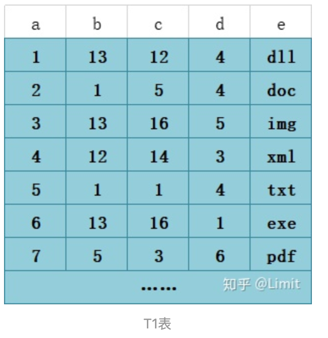
联合索引长下面的样子：
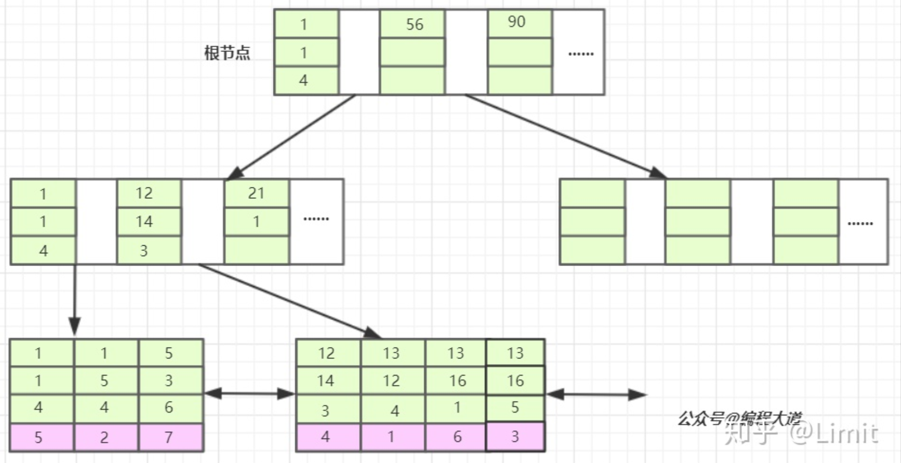
联合索引：联合索引的所有索引列都出现在索引数上，并依次比较三列的大小。
-
非叶子节点里仅仅负责按索引声明的顺序存储联合的各个索引值：比如这里的 b、c、d，它们还拥有相关指针，指向下一层节点；
-
叶子节点除了存储上述的索引值之外，还会存储 data，这里的 data 值的主键索引值；
MySQL 的 InnoDB 天然有一个主键索引来作为表的内部实现，联合索引作为辅助索引，实际上辅助索引的 data 都是主键索引的值。而对于 MyISAM 其叶子节点中的 data 则是指向主题数据在 .myd 文件中的地址。
-
关于排序：索引声明顺序为 (b,c,d) 因此顺序是升序，排序方式是先比较 b 再比较 c 最后比较 d，如果任意已经是不同了，那么就直接退出比较的迭代。
联合索引的查询工作方式
当我们的 SQL 语言可以应用到索引的时候，比如
|
|
也就是 T1 表中 a 列为 4 的这条记录。存储引擎首先从根节点（一般常驻内存）开始查找，第一个索引的第一个索引列为 1，12 大于 1，第二个索引的第一个索引列为 56，12 小于 56，于是从这俩索引的中间读到下一个节点的磁盘文件地址，从磁盘上 Load 这个节点，通常伴随一次磁盘 I/O，然后在内存里去查找。当 Load 叶子节点的第二个节点时又是一次磁盘 I/O，比较第一个元素，b= 12，c=14，d=3 完全符合，于是找到该索引下的 data 元素即ID值，再从主键索引树上找到最终数据。
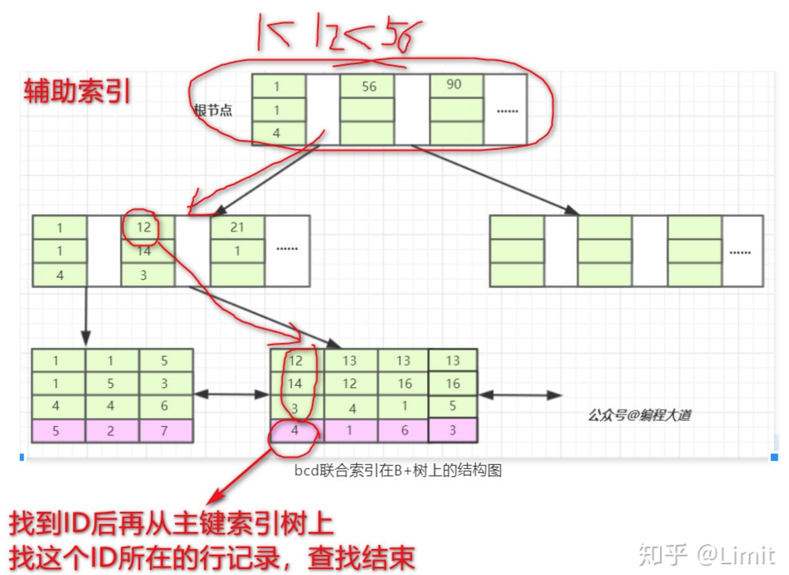
当然遗漏了从主键索引上查找的步骤，但是和上述过程完全是类似的，只不过主键索引是唯一的，而不像联合索引那般有多个匹配条件。
其他细节补充：
- 联合索引最多只能包含 16 列；
- blob 和 text 也能创建索引，但是必须指定前面多少位；
- 官方推荐了一种联合索引的替代方案: 可以额外创建一列，其列值由联合索引包含的所有列值所生成的 hash 值来构成；
4.6.3 聚簇索引
聚簇索引并不是一种单独的索引类型，而是一种数据存储方式。具体的细节依赖于其实现方式，但 InnoDB 的聚簇索引实际上在同一个结构中保存了 B-Tree 索引和数据行。
当表有聚簇索引时，它的数据行实际上存放在索引的叶子页(leaf page)中。术语“聚簇”表示数据行和相邻的键值紧凑地存储在一起。因为无法同时把数据行存放在两个不同的地方，所以一个表只能有一个聚簇索引(不过，覆盖索引可以模拟多个聚簇索引的情况）。
聚集的数据有一些重要的优点：
- 可以把相关数据保存在一起。例如实现电子邮箱时，可以根据用户 ID 来聚集数据，这样只需要从磁盘读取少数的数据页就能获取某个用户的全部邮件。如果没有使用聚簇索引，则每封邮件都可能导致一次磁盘 I/O。
- 数据访问更快。聚簇索引将索引和数据保存在同一个 B-Tree 中，因此从聚簇索引中获取数据通常比在非聚簇索引中查找要快。
- 使用覆盖索引扫描的查询可以直接使用页节点中的主键值。
聚簇索引的缺点：
-
聚簇数据最大限度地提高了 I/O 密集型应用的性能，但如果数据全部都放在内存中，则访问的顺序就没那么重要了，聚簇索引也就没什么优势了。
-
插入速度严重依赖于插入顺序。按照主键的顺序插人是加载数据到 InnoDB 表中速度最快的方式。但如果不是按照主键顺序加载数据，那么在加载完成后最好使用 0PTIMIZE TABLE 命令重新组织一下表。
-
更新聚簇索引列的代价很高，因为会强制 InnoDB 将每个被更新的行移动到新的位置。
-
基于聚簇索引的表在插入新行，或者主键被更新导致需要移动行的时候，可能面临“页分裂(page split)” 的问题。当行的主键值要求必须将这一行插入到某个已满的页中时，存储引擎会将该页分裂成两个页面来容纳该行，这就是一次页分裂操作。页分裂会导致表占用更多的磁盘空间。
-
聚簇索引可能导致全表扫描变慢，尤其是行比较稀疏，或者由于页分裂导致数据存储不连续的时候。
-
二级索引(非聚簇索引)可能比想象的要更大，因为在二级索引的叶子节点包含了引用行的主键列。
非主键索引实际上都是二级索引，其存储的内容为主键值或数据行地址。只有主键索引的叶节点存储着全部的数据。
-
二级索引访问需要两次索引查找，而不是一次查找。
在 MyISAM 中二级索引叶子节点存储数据行的地址，而 InnoDB 中存储的是主键值（不是主键地址）。InnoDB 的策略好处是：当出现行移动或者数据页分裂时二级索引的维护工作，不需要维护变动的指针；坏处是：使用主键值当作指针会让二级索引占用更多的空间。特它们的区别可以用下图表示：
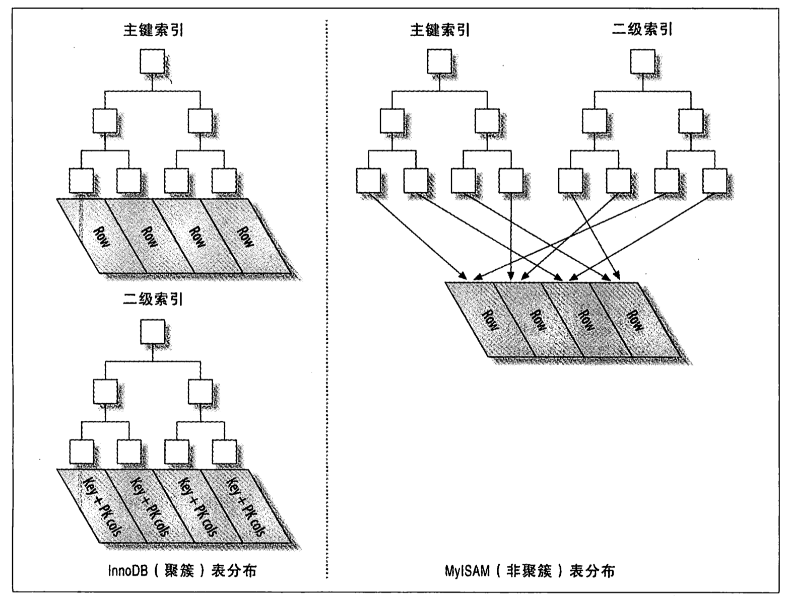
-
Row 代表一行行数据，InnoDB 的 Row 存储于主键索引的叶子节点中，MyISAM 的 ROW 单独存储于另一个文件。
-
二级索引的表现也有所不同，MyISAM 的二级索引值为 Row 的地址，InnoDB 则存储着主键值。
另一方面，InnoDB 主键索引叶子节点的数据由如下元素组成：
-
主键列上的值；
-
事务 ID；
-
用于事务和 MVCC 的回滚指针；
-
剩余所有列的值（下图中因为其他列只有 col2）；
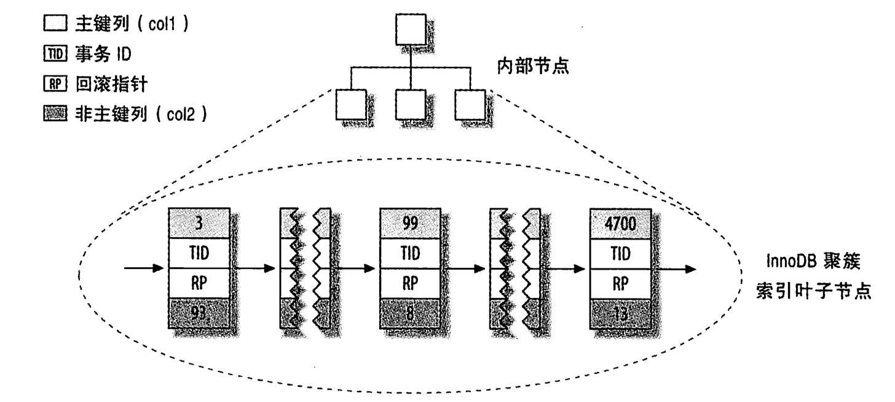
4.6.4 覆盖索引
我们通常关注于将 WHERE 子句后面的列字段用索引来提升性能，实际上我们还可以将 SELECT 子句后面的列字段作为索引来提升查询性能。索引确实是一种查找数据的高效方式，但是 MySQL 也可以使用索引来直接获取列的数据，这样就不再需要读取数据行。**如果索引的叶子节点中已经包含要查询的数据，那么还有什么必要再回表查询呢?**如果一个索引包含(或者说覆盖)所有需要查询的字段的值，我们就称之为“覆盖索引”。
覆盖索引，谁覆盖了谁？
索引覆盖了索要查询的字段。
覆盖索引是非常有用的工具，能够极大地提高性能。考虑一下如果查询只需要扫描索引而无须回表，会带来多少好处：
- 索引条目通常远小于数据行大小，所以如果只需要读取索引，那 MySQL 就会极大地减少数据访问量。这对缓存的负载非常重要，因为这种情况下响应时间大部分花费在数据拷贝上。覆盖索引对于 I/O 密集型的应用也有帮助，因为索引比数据更小，更容易全部放入内存中(这对于 MyISAM 尤其正确，因为 MyISAM 能压缩索引以变得更小)。
- 因为索引是按照列值顺序存储的(至少在单个页内是如此)，所以对于 I/O 密集型的范围查询会比随机从磁盘读取每一行数据的I/O要少得多。对于某些存储引擎，例如 MyISAM 和 Percona XtraDB，甚至可以通过 0PTIMIZE 命令使得索引完全顺序排列，这让简单的范围查询能使用完全顺序的索引访问。
- 一些存储引擎如 MyISAM 在内存中只缓存索引，数据则依赖于操作系统来缓存，因此要访问数据需要一次系统调用。这可能会导致严重的性能问题，尤其是那些系统调用占了数据访问中的最大开销的场景。
- 由于 InnoDB 的聚簇索引，覆盖索引对 InnoDB 表特别有用。InnoDB 的二级索引在叶子节点中保存了行的主键值，所以如果二级主键能够覆盖查询，则可以避免对主键索引的二次查询。
不是所有类型的索引都可以成为覆盖索引。覆盖索引必须要存储索引列的值，而哈希索引、空间索引和全文索引等都不存储索引列的值，所以 MySQL 只能使用 B-Tree 索引做覆盖索引。另外，不同的存储引擎实现覆盖索引的方式也不同，而且不是所有的引擎都支持覆盖索引。
4.6.5 重复索引和冗余索引
MySQL 允许在相同列上创建多个索引，无论是有意的还是无意的。MySQL 需要单独维护重复的索引，并且优化器在优化查询的时候也需要逐个地进行考虑，这会影响性能。
重复索引
重复索引是指在相同的列上按照相同的顺序创建的相同类型的索引。应该避免这样创建重复索引，发现以后也应该立即移除。
有时会在不经意间创建了重复索引，例如下面的代码：
|
|
一个经验不足的用户可能是想创建一个主键，先加上唯一限制，然后再加上索引以供查询使用。事实上，MySQL 的唯一限制和主键限制都是通过索引实现的，因此，上面的写法实际上在相同的列上创建了三个重复的索引。通常并没有理由这样做，除非是在同一列上创建不同类型的索引来满足不同的查询需求。
冗余索引
冗余索引和重复索引有一些不同。如果创建了索引 (A, B)，再创建索引 (A) 就是冗余索引，因为这只是前一个索引的前缀索引。因此索引 (A, B) 也可以当作索引 (A) 来使用(这种冗余只是对 B-Tree 索引来说的)。但是如果再创建索引 (B, A)，则不是冗余索引，索引 (B) 也不是，因为 B 不是索引 (A,B) 的最左前缀列。另外，其他不同类型的索引(例如哈希索引或者全文索引)也不会是 B-Tree 索引的冗余索引，而无论覆盖的索引列是什么。
冗余索引通常发生在为表添加新索引的时候。例如，有人可能会增加一个新的索引 (AB)而不是扩展已有的索引 (A)。还有一种情况是将一个索引扩展为 (A, ID)，其中 ID 是主键，对于 InnoDB 来说主键列已经包含在二级索引中了，所以这也是冗余的。
大多数情况下都不需要冗余索引，应该尽量扩展已有的索引而不是创建新索引。但也有时候出于性能方面的考虑需要冗余索引，因为扩展已有的索引会导致其变得太大，从而影响其他使用该索引的查询的性能。
5. 正确使用索引进行查询
5.1 前缀索引和索引选择性
有时候需要索引很长的字符列，这会让索引变得大且慢。一个策略是前面提到过的模拟哈希索引，这是因为哈希运算总是能将输入值转换为一个统一长度的值。但是 Hash 索引有其固有的缺陷，应用领域非常窄。
通常可以索引开始的部分字符，这样可以大大节约索引空间，从而提高索引效率，但这样也会降低索引的选择性。
- 基数 cardinality：不重复的索引值数量；
- 记录总数 #T
- 索引的选择性：cardinality/#T，范围从
1/#T到 1 之间。唯一索引的选择性是 1，这是最好的索引选择性，性能也是最好的。
索引的选择性越高则查询效率越高，因为选择性高的索引可以让 MySQL 在查找时过滤掉更多的行。
前缀的长度和基于索引的查询性能呈现一个抛物线的关系，过短和过长都不合适。一般情况下某个列前缀的选择性也是足够高的，足以满足查询性能。对于 BLOB、TEXT 或者很长的 VARCHAR 类型的列，必须使用前缀索引，因为 MySQL 不允许索引这些列的完整长度。
总之，标准是：前缀的“基数”应该接近于完整列的“基数”。
我们可以通过如下手段来进行表关于某一个字段选择性的计算。
比如我们现在有个 Employee 表，其中有个 FirstName 字段，是 varchar(50) 的，我们查询该字段的索引选择性：
|
|
假设得到的结果为：得到结果 0.7500，然后我们希望对 FirstName 建立前缀索引，希望前缀索引的选择性能够尽量贴近于对整个字段建立索引时的选择性。我们先看看 3 个字符，如何：
|
|
得到的结果是 0.58784，好像差距有点大，我们再试一试 4 个字符呢：
|
|
得到 0.68919，已经提升了很多，再试一试 5 个字符，得到的结果是 0.72297，这个结果与 0.75 已经很接近了，所以我们这里认为前缀长度 5 是一个合适的取值。所以我们可以为 FirstName 建立前缀索引：
|
|
注意事项：建立前缀索引后查询语句并不需要更改，如果我们要查询所有 FirstName 为 Devin 的 Employee，那么 SQL 仍然写成：
|
|
前缀索引是一种能使索引更小、更快的有效办法，但另一方面也有其缺点：MySQL 无法使用前缀索引做 ORDER BY 和 GROUP BY，也无法使用前缀索引做覆盖扫描。
后缀索引(suffix index)也有其用途( 例如，找到某个域名的所有电子邮件地址)。MySQL 原生并不支持反向索引，但是可以把字符串反转后存储，并基于此建立前缀索引。可以通过触发器来维护这种索引。
5.2 复合索引的顺序与最左前缀匹配原则
最左前缀匹配原则指的是 MySQL 会一直向右匹配直到遇到范围查询 (>、<、between、like) 就停止匹配，比如 a = 1 and b = 2 and c > 3 and d = 4 如果建立(a,b,c,d) 顺序的索引，d 是用不到索引的，如果建立(a,b,d,c) 的索引则都可以用到，a,b,d 的顺序可以任意调整。
因为 MySQL 有查询优化器，这里的顺序指的是创建索引的顺序，和查询语句中的顺序没有关系。
正确的顺序依赖于使用该索引的查询，并且同时需要考虑如何更好地满足排序和分组的需要。
这几基于 B-tree 数据结构进行讨论索引顺序，对于其他索引可能不具有相关性质，比如 Hash 索引本身就不会按照索引字段进行排序。
在一个多列 B-Tree 索引中，索引列的顺序意味着索引首先按照最左列进行排序，其次是第二列，等等。所以，索引可以按照升序或者降序进行扫描，以满足精确符合列顺序的 ORDER BY、GROUP BY 和 DISTINCT 等子句的查询需求。
在基于 B-Tree 索引数据结构背景强调索引的声明顺序的原因是联合索引的查询机制。比如建立了一个 (name,age,sex) 的联合索引：
- 当
(张三,20,F)1 这样的数据来检索的时候，b+ 树会优先比较 name 来确定下一步的所搜方向，如果 name 相同再依次比较 age 和 sex，最后得到检索的数据； - 当
(20,F)这样的没有 name 的数据来的时候，b+ 树就不知道下一步该查哪个节点，因为建立搜索树的时候 name 就是第一个比较因子，必须要先根据 name 来搜索才能知道下一步去哪里查询。 - 当
(张三,F)这样的数据来检索时，b+ 树可以用 name 来指定搜索方向，但下一个字段 age 的缺失，所以只能把名字等于张三的数据都找到，然后再匹配性别是 F 的数据了，这个是非常重要的性质，即索引的最左匹配特性。
注意：在查询语句中的顺序是无关紧要的，比如
WHERE filed1 = 'xx',filed2 = 'mm',filed3 = 'nn'与WHERE filed3 = 'xx',filed1 = 'mm',filed2 = 'nn'是没有任何区别的。
对于如何选择索引的列顺序有一个经验法则：将选择性最高的列放到索引最前列。这个建议有用吗？在某些场景可能有帮助，但通常不如避免随机 I/O 和排序那么重要，考虑问题需要更全面(场景不同则选择不同，没有一个放之四海皆准的法则。这里只是说明，这个经验法则可能没有你想象的重要)。
当不需要考虑排序和分组时，将选择性最高的列放在前面通常是很好的。这时候索引的作用只是用于优化 WHERE 条件的查找。在这种情况下，这样设计的索引确实能够最快地过滤出需要的行，对于在 WHERE 子句中只使用了索引部分前缀列的查询来说选择性也更高。然而，性能不只是依赖于所有索引列的选择性(整体基数)，也和查询条件的具体值有关，也就是和值的分布有关。这和前面介绍的选择前缀的长度需要考虑的地方一样。可能需要根据那些运行频率最高的查询来调整索引列的顺序，让这种情况下索引的选择性最高。
5.3 索引排序
相信你听说过这样的建议：如果有 order by 的需求，给需要排序的字段加上索引，就可以避免数据库排序操作。
- 所谓数据库排序操作，是指数据库在执行过程中，先将满足条件的数据全部读出来，放入内存中，再执行快排，这个内存就是 sort_buffer。
- 如果临时数据量比 sort_buffer 大， 就要把数据放入临时文件，然后做外部排序，这种操作就是 file sort。
为了便于说明，我创建一个简单的表，这个表里，除了主键索引 id 外，还有一个联合索引 ab。你可以在文稿中看到这个表的定义。
|
|
单字段排序
一个简单的需求是将这个表的数据，按照 a 的大小倒序返回。你的 SQL 语句可以这么写：
|
|
原文中没有 WHERE 子句，我额外添加上的，因为否则在我们 MySQL 版本上会导致不使用索引，最终导致使用 file sort。
我们来看看这个联合索引 ab 的结构。
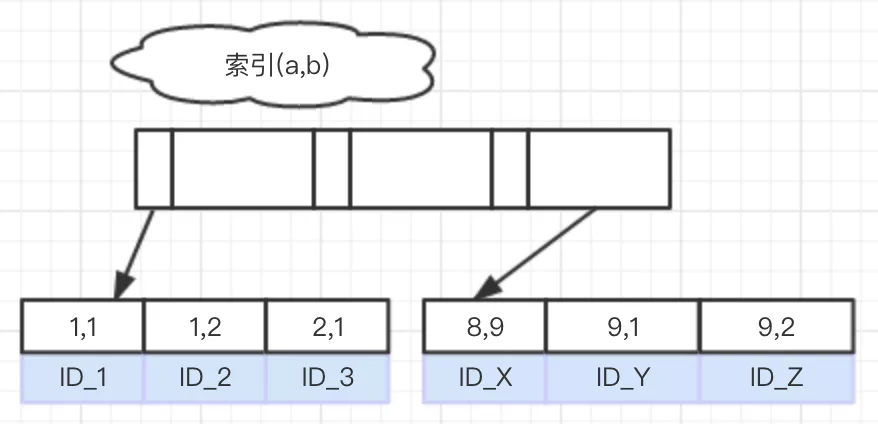
可以看到，在这个索引上，数据存储顺序是：
- 优先按照 a 值从左向右递增；
- 对于 a 值相同的情况，按照 b 值从左向右递增；
因此上面这个语句的执行流程就是：
- 从索引 ab 上，取最右的一个记录，取出主键值 ID_Z；
- 根据 ID_Z 到主键索引上取整行记录，作为结果集的第一行；
- 在索引 ab 上取上一个记录的左边相邻的记录；
- 每次取到主键 id 值，再到主键索引上取到整行记录，添加到结果集的下一行；
- 重复步骤 3、4，直到遍历完整个索引。
可以看到，这个流程中并不涉及到排序操作。我们也可以用 explain 语句来验证这个结论。
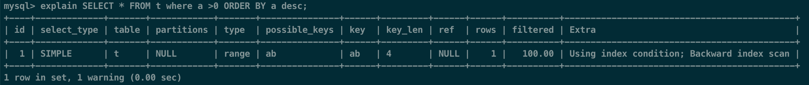
上图是这个语句的 explain 的结果，可以看到，Extra 字段中没有 Using filesort 字样，说明这个语句执行过程中，不需要用到排序。
组合字段排序
有了上面的分析，我们再来看看下面这个语句：
|
|
这个语句的意思是，按照 a 值倒序，当 a 的值相同时按照 b 值倒序。
倒序不需要排序，正序呢？正序的语句是这么写的：
|
|
显然，这个语句也是不需要排序的，执行流程上，只需要先取 ab 索引树最左边的节点，然后向右遍历即可。
到这里我们可以小结一下：
-
InnoDB 索引树以任意一个叶节点为起始点，可以向左或向右遍历；
-
如果语句需要的 order by 顺序刚好可以利用索引树的单向遍历，就可以避免排序操作。
Descending Indexes
单向遍历的要求是联合索引的同时是升序或者降序。
接下来我们来看一种不满足”单向遍历“的场景。
|
|
这个语句要求查询结果中的记录排序顺序是：按照 a 值正序，对于相同的 a 值，按照 b 值倒序。
由于不满足单向遍历的要求，因此只能选择使用排序操作，如下所示：
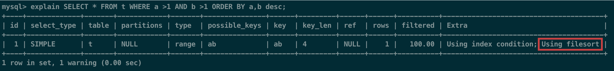
extra 字段中 Using filesort 表示使用了排序。
你一定想到了，如果可以让 InnoDB 在构建索引 ab 的时候，相同的 a 里面，b 能够从大到小排序，就又可以满足单向遍历的要求了。
如下所示，我们创建一个新表：
|
|
我们将索引 ab 的定义做了修改，在字段 b 后面加上 desc，表示对于相同的 a 值，字段 b 按照倒序存储。
这个表对应的索引 ab 的结构图如下：
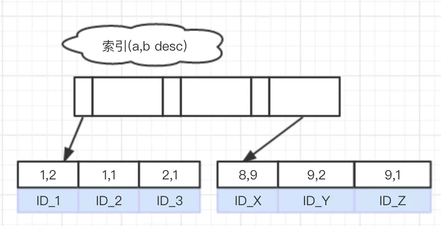
接着我们再次执行 explain，如下：
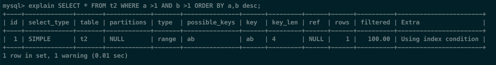
Descending Indexes 可以避免这种情况下的排序操作，语句的执行性能自然就提升了。
使用 File sort 和 Index 的不同情况
ORDER BY 主要满足以下情况，会使用 Index 方式排序：
ORDER BY 语句使用索引最左前列；
比如 (a,b) 联合索引下，ORDER BY a 、ORDER BY a,b 都是符合要求的，但是如果 ORDER BY b 或者 ORDER BY b,a 这种情况都是不符合要求的。
以下情况，会使用 FileSort 方式的排序：
- 检查的行数过多，且没有使用覆盖索引；
- 查询时的索引升序降序和索引声明时的升序降序冲突；
不全，主要有这两，总之都可以通过 explain 来检查语句是否有使用了效率较低的 file sort。
5.4 索引的失效场景
索引一旦失效，就要做全表扫描，效率会有所降低。
-
如果将索引列作为表达式的一部分或者函数参数，那么索引会失效。例如，下面这个查询无法使用 actor_ id 列的索引：
1mysql> SELECT actor_id FROM sakila.actor WHERE actor_id + 1 = 5;只有将上述语句修改为如下等价形式，才能够享受到 MySQL 的索引查询优化：
1mysql> SELECT actor_id FROM sakila.actor WHERE actor_id = 4;我们应该养成简化 WHERE 条件的习惯，始终将索引列单独放在比较符号的一侧。
为什么将索引放置到表达式，作为函数参数后就享受不了索引优化带来的特性？
这是因为索引的查询优势本质上基于有序性，但是你将索引值放到函数、表达式中，但是函数的计算结果不可预测，可能破坏有序性。
-
不符合最左匹配原则，例如定义了 (a,b,c) 联合索引，相当于构造了 (a)、(a,b)、(a,b,c) 索引。如果要使 c 索引实际工作，那么必须在 WHERE 中同时加入 a、b 字段的条件，顺序无所谓。对于 b，则必须加入 a。而 a 索引可以单独出现并工作。
-
如果查询中有某个列的范围查询，则其右边所有列都无法使用索引优化查找。例如有查询
WHERE last_name='Smith' AND first_ name LIKE 'J%' AND dob =' 1976-12-23'，这个查询只能使用索引的前两列，因为这里 LIKE 是一个范围条件(但是服务器可以把其余列用于其他目的)。如果范围查询列值的数量有限，那么可以通过使用多个等于条件来代替范围条件。其他常见的范围查找有：通过 <,>,<= ,\ >=,\ between，!=,或者 <> 操作符做比较。它们都是导致索引失效。
注意事项：
IN()不是范围匹配，而是多个等值匹配，因此并不会导致索引失效。 -
如果 WHERE 子句的查询条件里使用了比较操作符 LIKE 和 REGEXP，MySQL 只有在搜索模板的第一个字符不是通配符的情况下才能使用索引。比如说，如果查询条件是
LIKE 'abc%'，MySQL 将使用索引（虽然最终会导致后续索引失效）；如果条件是LIKE '%abc'，MYSQL 将不使用索引。 -
如果 WHERE 子句带有 or 且其中至少存在一个列字段不属于索引，那么即使其中带索引的字段也不会使用。
6. 索引和锁
索引可以让查询锁定更少的行。如果你的查询从不访问那些不需要的行，那么就会锁定更少的行，从两个方面来看这对性能都有好处。
- 首先，虽然 InnoDB 的行锁效率很高，内存使用也很少，但是锁定行的时候仍然会带来额外开销；
- 其次，锁定超过需要的行会增加锁争用并减少并发性。
InnoDB 只有在访问行的时候才会对其加锁，而索引能够减少 InnoDB 访问的行数，从而减少锁的数量。
但这只有当 InnoDB 在存储引擎层能够过滤掉所有不需要的行时才有效。
在服务器端再进行过滤是无效的。
如果索引无法过滤掉无效的行，那么在 InnoDB 检索到数据并返回给服务器层以后，MySQL 服务器才能应用 WHERE 子句。这时已经无法避免锁定行了：InnoDB 已经锁住了这些行，到适当的时候才释放。在 MySQL 5.1 和更新的版本中，InnoDB 可以在服务器端过滤掉行后就释放锁，但是在早期的 MySQL 版本中，InnoDB 只有在事务提交后才能释放锁。
下面这个例子说明了即使使用索引，InnoDB 还是会锁住一些不需要的数据 ，但是即使是这样，索引还是限定了会被锁定的行数，如果不能使用索引查找和锁定行的话问题可能会更糟糕，MySQL 会做全表扫描并锁住所有的行，而不管是不是需要。
下面是一个例子：
|
|
FOR UPDATE 是在数据库中上锁用的，用于为数据库中的行上一个排它锁；当一个事务的操作未完成时候 ，其他事务可以读取但是不能写入或更新。
这条查询仅仅会返回 2~4 之间的行，但是实际上获取了1~4 之间的行的排他锁。
InnoDB 会锁住第 1 行，这是因为 MySQL 为该查询选择的执行计划是索引范围扫描：
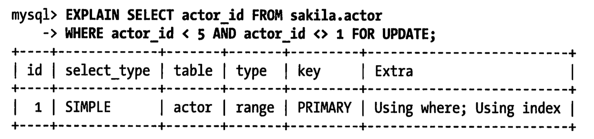
换句话说，底层存储引擎的操作是 “从索引的开头开始获取满足条件 actor_ id< 5 的记录”，服务器并没有告诉 InnoDB 可以过滤第 1 行的 WHERE 条件。注意到 EXPLAIN 的 Extra 列出现了 **“Using where”，这表示 MySQL 服务器将存储引擎返回行以后再应用 WHERE 过滤条件**。
7. 减少索引和数据碎片
B-Tree 索引可能会碎片化，这会降低查询的效率。碎片化的索引可能会以很差或者无序的方式存储在磁盘上。
根据设计，B-Tree 需要随机磁盘访问才能定位到叶子页，所以随机访问是不可避免的。然而，如果叶子页在物理分布上是顺序且紧密的，那么查询的性能就会更好。否则，对于范围查询、索引覆盖扫描等操作来说，速度可能会降低很多倍；对于索引覆盖扫描这一点更加明显。
表的数据存储也可能碎片化。然而，数据存储的碎片化比索引更加复杂。有三种类型的数据碎片。
-
行碎片(Row fragmentation)
这种碎片指的是数据行被存储为多个地方的多个片段中。即使查询只从索引中访问一行记录，行碎片也会导致性能下降。
-
行间碎片(Intra-row fragmentation)
行间碎片是指逻辑上顺序的页，或者行在磁盘上不是顺序存储的。行间碎片对诸如全表扫描和聚簇索引扫描之类的操作有很大的影响，因为这些操作原本能够从磁盘上顺序存储的数据中获益。
-
剩余空间碎片(Free space fragmentation)
剩余空间碎片是指数据页中有大量的空余空间。这会导致服务器读取大量不需要的数据，从而造成浪费。
对于 MyISAM 表，这三类碎片化都可能发生。但 InnoDB 不会出现短小的行碎片；InnoDB 会移动短小的行并重写到一个片段中。
可以通过执行 0PTIMIZE TABLE 或者导出再导入的方式来重新整理数据。这对多数存储引擎都是有效的。对于一些存储引擎如 MyISAM，可以通过排序算法重建索引的方式来消除碎片。老版本的 InnoDB 没有什么消除碎片化的方法。不过最新版本 InnoDB 新增了“在线”添加和删除索引的功能，可以通过先删除，然后再重新创建索引的方式来消除索引的碎片化。
引用：